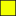
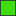
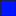

<!doctype html>
<html lang="en">
    <head>
        <meta charset="utf-8">
        <meta http-equiv="X-UA-Compatible" content="IE=edge">
        <meta name="viewport" content="initial-scale=1,user-scalable=no,maximum-scale=1,width=device-width">
        <meta name="mobile-web-app-capable" content="yes">
        <meta name="apple-mobile-web-app-capable" content="yes">
        <link rel="stylesheet" href="css/leaflet.css">
        <link rel="stylesheet" href="css/qgis2web.css"><link rel="stylesheet" href="css/fontawesome-all.min.css">
        <style>
        html, body, #map {
            width: 100%;
            height: 100%;
            padding: 0;
            margin: 0;
        }
        </style>
        <title>Unpaid Parking in City of Melbourne</title>
    </head>
    <body>
        <div id="map">
        </div>
        <script src="js/qgis2web_expressions.js"></script>
        <script src="js/leaflet.js"></script>
        <script src="js/leaflet.rotatedMarker.js"></script>
        <script src="js/leaflet.pattern.js"></script>
        <script src="js/leaflet-hash.js"></script>
        <script src="js/Autolinker.min.js"></script>
        <script src="js/rbush.min.js"></script>
        <script src="js/labelgun.min.js"></script>
        <script src="js/labels.js"></script>
        <script src="data/PaidParking_1.js"></script>
        <script src="data/PostGISBestUnpaidParkingRestriction_2.js"></script>
        <script>
        var highlightLayer;
        function highlightFeature(e) {
            highlightLayer = e.target;

            if (e.target.feature.geometry.type === 'LineString') {
              highlightLayer.setStyle({
                color: '#ffff00',
              });
            } else {
              highlightLayer.setStyle({
                fillColor: '#ffff00',
                fillOpacity: 1
              });
            }
        }
        var map = L.map('map', {
            zoomControl:true, maxZoom:21, minZoom:1
        }).fitBounds([[-37.84298054550397,144.8911539959157],[-37.77681105157257,145.0164929899106]]);
        var hash = new L.Hash(map);
        map.attributionControl.setPrefix('<a href="https://github.com/tomchadwin/qgis2web" target="_blank">qgis2web</a> &middot; <a href="https://leafletjs.com" title="A JS library for interactive maps">Leaflet</a> &middot; <a href="https://qgis.org">QGIS</a>');
        var autolinker = new Autolinker({truncate: {length: 30, location: 'smart'}});
        var bounds_group = new L.featureGroup([]);
        function setBounds() {
            map.setMaxBounds(map.getBounds());
        }
        map.createPane('pane_OSMStandard_0');
        map.getPane('pane_OSMStandard_0').style.zIndex = 400;
        var layer_OSMStandard_0 = L.tileLayer('http://tile.openstreetmap.org/{z}/{x}/{y}.png', {
            pane: 'pane_OSMStandard_0',
            opacity: 1.0,
            attribution: '<a href="https://www.openstreetmap.org/copyright">© OpenStreetMap contributors, CC-BY-SA</a>',
            minZoom: 1,
            maxZoom: 21,
            minNativeZoom: 0,
            maxNativeZoom: 19
        });
        layer_OSMStandard_0;
        map.addLayer(layer_OSMStandard_0);
        function pop_PaidParking_1(feature, layer) {
            layer.on({
                mouseout: function(e) {
                    for (i in e.target._eventParents) {
                        e.target._eventParents[i].resetStyle(e.target);
                    }
                },
                mouseover: highlightFeature,
            });
            var popupContent = '<table>\
                    <tr>\
                        <td colspan="2">' + (feature.properties['gid'] !== null ? autolinker.link(feature.properties['gid'].toLocaleString()) : '') + '</td>\
                    </tr>\
                    <tr>\
                        <td colspan="2">' + (feature.properties['__gid'] !== null ? autolinker.link(feature.properties['__gid'].toLocaleString()) : '') + '</td>\
                    </tr>\
                    <tr>\
                        <td colspan="2">' + (feature.properties['seg_descr'] !== null ? autolinker.link(feature.properties['seg_descr'].toLocaleString()) : '') + '</td>\
                    </tr>\
                </table>';
            layer.bindPopup(popupContent, {maxHeight: 400});
        }

        function style_PaidParking_1_0() {
            return {
                pane: 'pane_PaidParking_1',
                opacity: 1,
                color: 'rgba(35,35,35,1.0)',
                dashArray: '',
                lineCap: 'butt',
                lineJoin: 'miter',
                weight: 1.0, 
                fill: true,
                fillOpacity: 1,
                fillColor: 'rgba(0,0,0,1.0)',
                interactive: false,
            }
        }
        map.createPane('pane_PaidParking_1');
        map.getPane('pane_PaidParking_1').style.zIndex = 401;
        map.getPane('pane_PaidParking_1').style['mix-blend-mode'] = 'normal';
        var layer_PaidParking_1 = new L.geoJson(json_PaidParking_1, {
            attribution: '',
            interactive: false,
            dataVar: 'json_PaidParking_1',
            layerName: 'layer_PaidParking_1',
            pane: 'pane_PaidParking_1',
            onEachFeature: pop_PaidParking_1,
            style: style_PaidParking_1_0,
        });
        bounds_group.addLayer(layer_PaidParking_1);
        map.addLayer(layer_PaidParking_1);
        function pop_PostGISBestUnpaidParkingRestriction_2(feature, layer) {
            layer.on({
                mouseout: function(e) {
                    for (i in e.target._eventParents) {
                        e.target._eventParents[i].resetStyle(e.target);
                    }
                },
                mouseover: highlightFeature,
            });
            var popupContent = '<table>\
                    <tr>\
                        <th scope="row">Street Description</th>\
                        <td>' + (feature.properties['seg_descr'] !== null ? autolinker.link(feature.properties['seg_descr'].toLocaleString()) : '') + '</td>\
                    </tr>\
                    <tr>\
                        <th scope="row">Unrestricted</th>\
                        <td>' + (feature.properties['Unrestricted'] !== null ? autolinker.link(feature.properties['Unrestricted'].toLocaleString()) : '') + '</td>\
                    </tr>\
                    <tr>\
                        <th scope="row"><1 Hour</th>\
                        <td>' + (feature.properties['Less_than_one_hour'] !== null ? autolinker.link(feature.properties['Less_than_one_hour'].toLocaleString()) : '') + '</td>\
                    </tr>\
                    <tr>\
                        <th scope="row">1 Hour</th>\
                        <td>' + (feature.properties['one_hour'] !== null ? autolinker.link(feature.properties['one_hour'].toLocaleString()) : '') + '</td>\
                    </tr>\
                    <tr>\
                        <th scope="row">2 Hour</th>\
                        <td>' + (feature.properties['two_hour'] !== null ? autolinker.link(feature.properties['two_hour'].toLocaleString()) : '') + '</td>\
                    </tr>\
                    <tr>\
                        <th scope="row">3 Hour</th>\
                        <td>' + (feature.properties['three_hour'] !== null ? autolinker.link(feature.properties['three_hour'].toLocaleString()) : '') + '</td>\
                    </tr>\
                    <tr>\
                        <th scope="row">4 Hour</th>\
                        <td>' + (feature.properties['four_hour'] !== null ? autolinker.link(feature.properties['four_hour'].toLocaleString()) : '') + '</td>\
                    </tr>\
                </table>';
            layer.bindPopup(popupContent, {maxHeight: 400});
        }

        function style_PostGISBestUnpaidParkingRestriction_2_0(feature) {
            switch(String(feature.properties['q2wHide_best_unpaid'])) {
                case '0':
                    return {
                pane: 'pane_PostGISBestUnpaidParkingRestriction_2',
                opacity: 1,
                color: 'rgba(35,35,35,1.0)',
                dashArray: '',
                lineCap: 'butt',
                lineJoin: 'miter',
                weight: 1.0, 
                fill: true,
                fillOpacity: 1,
                fillColor: 'rgba(215,25,28,1.0)',
                interactive: true,
            }
                    break;
                case '1':
                    return {
                pane: 'pane_PostGISBestUnpaidParkingRestriction_2',
                opacity: 1,
                color: 'rgba(35,35,35,1.0)',
                dashArray: '',
                lineCap: 'butt',
                lineJoin: 'miter',
                weight: 1.0, 
                fill: true,
                fillOpacity: 1,
                fillColor: 'rgba(255,127,0,1.0)',
                interactive: true,
            }
                    break;
                case '2':
                    return {
                pane: 'pane_PostGISBestUnpaidParkingRestriction_2',
                opacity: 1,
                color: 'rgba(35,35,35,1.0)',
                dashArray: '',
                lineCap: 'butt',
                lineJoin: 'miter',
                weight: 1.0, 
                fill: true,
                fillOpacity: 1,
                fillColor: 'rgba(233,185,82,1.0)',
                interactive: true,
            }
                    break;
                case '3':
                    return {
                pane: 'pane_PostGISBestUnpaidParkingRestriction_2',
                opacity: 1,
                color: 'rgba(35,35,35,1.0)',
                dashArray: '',
                lineCap: 'butt',
                lineJoin: 'miter',
                weight: 1.0, 
                fill: true,
                fillOpacity: 1,
                fillColor: 'rgba(242,255,1,1.0)',
                interactive: true,
            }
                    break;
                case '4':
                    return {
                pane: 'pane_PostGISBestUnpaidParkingRestriction_2',
                opacity: 1,
                color: 'rgba(35,35,35,1.0)',
                dashArray: '',
                lineCap: 'butt',
                lineJoin: 'miter',
                weight: 1.0, 
                fill: true,
                fillOpacity: 1,
                fillColor: 'rgba(62,220,14,1.0)',
                interactive: true,
            }
                    break;
                case '5':
                    return {
                pane: 'pane_PostGISBestUnpaidParkingRestriction_2',
                opacity: 1,
                color: 'rgba(35,35,35,1.0)',
                dashArray: '',
                lineCap: 'butt',
                lineJoin: 'miter',
                weight: 1.0, 
                fill: true,
                fillOpacity: 1,
                fillColor: 'rgba(1,22,255,1.0)',
                interactive: true,
            }
                    break;
                case '6':
                    return {
                pane: 'pane_PostGISBestUnpaidParkingRestriction_2',
                opacity: 1,
                color: 'rgba(35,35,35,1.0)',
                dashArray: '',
                lineCap: 'butt',
                lineJoin: 'miter',
                weight: 1.0, 
                fill: true,
                fillOpacity: 1,
                fillColor: 'rgba(125,139,143,1.0)',
                interactive: true,
            }
                    break;
            }
        }
        map.createPane('pane_PostGISBestUnpaidParkingRestriction_2');
        map.getPane('pane_PostGISBestUnpaidParkingRestriction_2').style.zIndex = 402;
        map.getPane('pane_PostGISBestUnpaidParkingRestriction_2').style['mix-blend-mode'] = 'normal';
        var layer_PostGISBestUnpaidParkingRestriction_2 = new L.geoJson(json_PostGISBestUnpaidParkingRestriction_2, {
            attribution: '',
            interactive: true,
            dataVar: 'json_PostGISBestUnpaidParkingRestriction_2',
            layerName: 'layer_PostGISBestUnpaidParkingRestriction_2',
            pane: 'pane_PostGISBestUnpaidParkingRestriction_2',
            onEachFeature: pop_PostGISBestUnpaidParkingRestriction_2,
            style: style_PostGISBestUnpaidParkingRestriction_2_0,
        });
        bounds_group.addLayer(layer_PostGISBestUnpaidParkingRestriction_2);
        map.addLayer(layer_PostGISBestUnpaidParkingRestriction_2);
            var title = new L.Control();
            title.onAdd = function (map) {
                this._div = L.DomUtil.create('div', 'info');
                this.update();
                return this._div;
            };
            title.update = function () {
                this._div.innerHTML = '<h2>Unpaid Parking in City of Melbourne</h2>';
            };
            title.addTo(map);
            var abstract = new L.Control({'position':'bottomright'});
            abstract.onAdd = function (map) {
                this._div = L.DomUtil.create('div',
                'leaflet-control abstract');
                this._div.id = 'abstract'
                    this._div.setAttribute("onmouseenter", "abstract.show()");
                    this._div.setAttribute("onmouseleave", "abstract.hide()");
                    this.hide();
                    return this._div;
                };
                abstract.hide = function () {
                    this._div.classList.remove("abstractUncollapsed");
                    this._div.classList.add("abstract");
                    this._div.innerHTML = 'i'
                }
                abstract.show = function () {
                    this._div.classList.remove("abstract");
                    this._div.classList.add("abstractUncollapsed");
                    this._div.innerHTML = 'The pupose of this map is to allow users to find what sort of unpaid parking restrictions exist on any given road in the City of Melbourne.<br /><br />Parking restrictions can be complex and complexity increases as they scale increases. In an effort to simplify the information, sections of road where parking meters exist have been made black. The remaining sections of road, in theory, have free parking available. However, the parking restriction information is not currently available. So a public project has been setup on QField Cloud, and users can install the QField app on their phone and contribute to the parking restrictions on roads across the city.<br /><br />From the data that has been contributed and is available in this map, the best-case-scenario is used to colour code the sections of road. Use the Legend to find the best available parking restrictions or click on a section of road to find the different types of parking restrictions available for that road section.';
            };
            abstract.addTo(map);
        var baseMaps = {};
        L.control.layers(baseMaps,{'PostGIS: Best Unpaid Parking Restriction<br /><table><tr><td style="text-align: center;"></td><td><1 Hour</td></tr><tr><td style="text-align: center;"></td><td>1 Hour</td></tr><tr><td style="text-align: center;"></td><td>2 Hour</td></tr><tr><td style="text-align: center;"></td><td>3 Hour</td></tr><tr><td style="text-align: center;"></td><td>4 Hour</td></tr><tr><td style="text-align: center;"></td><td>Unrestricted</td></tr><tr><td style="text-align: center;"></td><td>No data</td></tr></table>': layer_PostGISBestUnpaidParkingRestriction_2,' Paid Parking': layer_PaidParking_1,"OSM Standard": layer_OSMStandard_0,},{collapsed:false}).addTo(map);
        setBounds();
        </script>
    </body>
</html>
